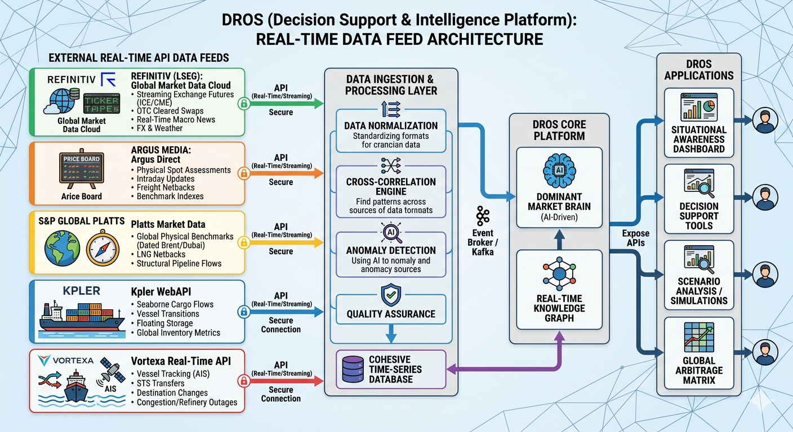
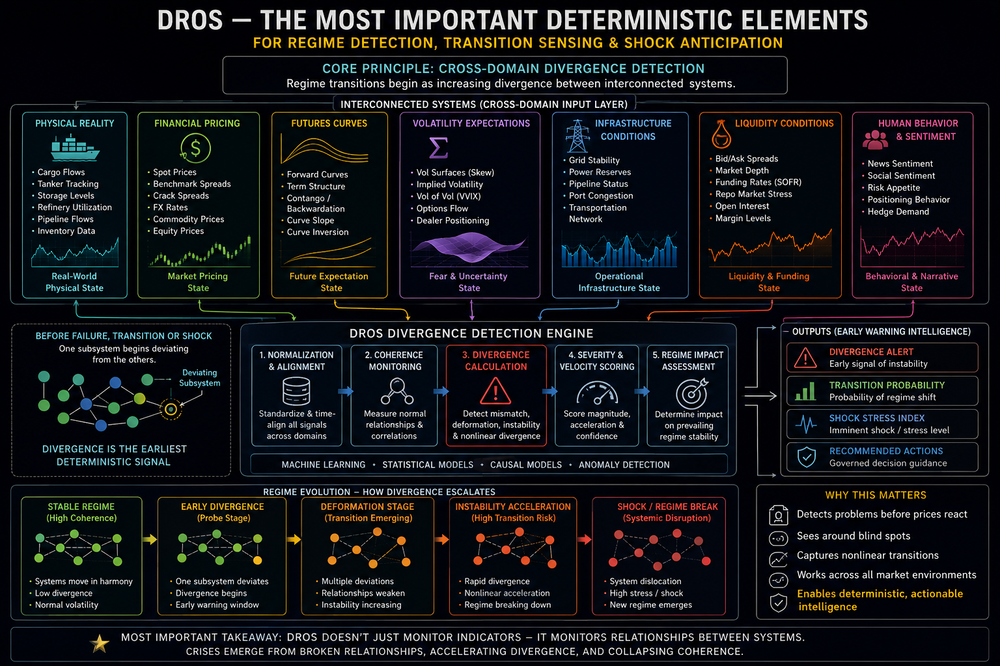
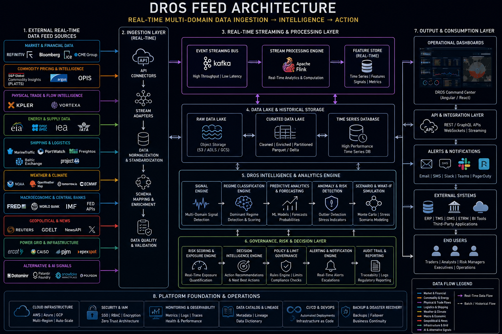
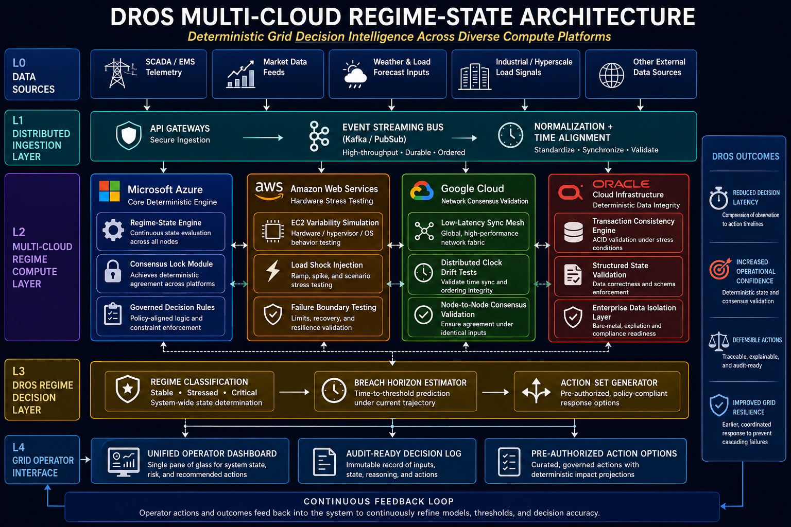
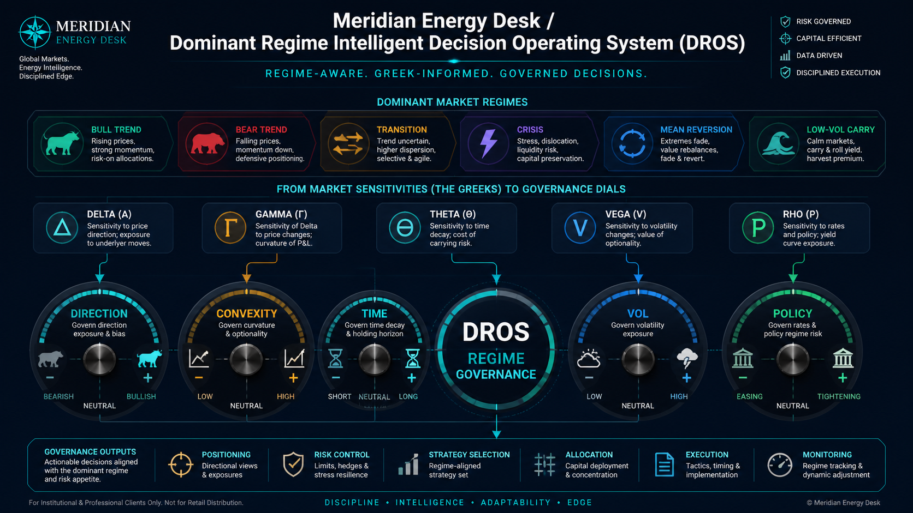
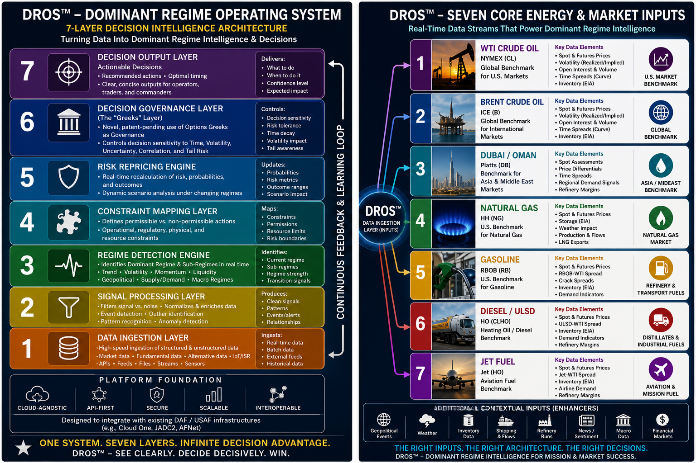

What is DROS?
The Dominant Regime Operating System is a deterministic, regime‑aware decision engine engineered to detect, classify, and operationalize structural shifts in complex environments. Built for aviation, defense, energy, and mission‑critical operations where milliseconds matter.
DROS Architecture
Below are the official DROS architecture diagrams, rendered directly from the repository.







Status
DROS Repository Active — GitHub Pages Deployment Successful.